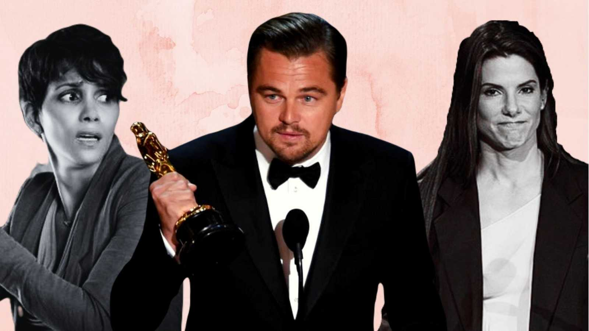
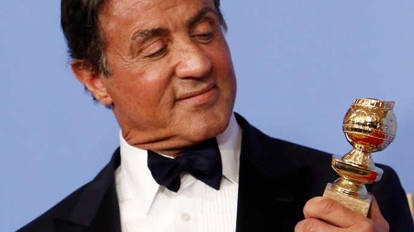
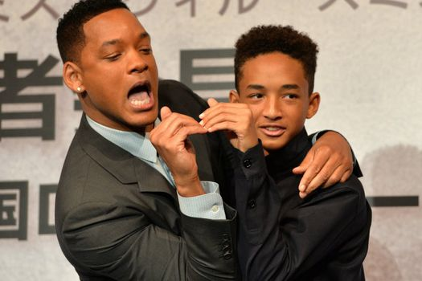

Personas que han recogido el premio y hechos memorables

1985/1986/1989/1993/1995: Sylvester Stallone recibió nueve premios Razzie: peor actor en Rhinestone, actor y guion en Rambo: First Blood Part II, actor y director en Rocky IV, actor en Rambo III, actor en Stop! Or My Mom Will Shoot, por pareja en pantalla en El especialista y actor de reparto en Spy Kids 3-D: Game Over. Además de estos nueve premios, fue nominado treinta veces por peor actor, guion, actor de reparto, director y pareja en pantalla
1988: Bill Cosby recibió tres premios Razzie (peor película, actor y guion) por Leonard, Part 6, una parodia de espías de la que el propio Cosby ha renegado públicamente. Cosby se convirtió en la primera persona que aceptó en persona sus Razzies, cosa que hizo unas cuantas semanas después de la ceremonia en cuestión en el programa The Late Show en la Fox. Según una entrevista a Cosby en El show de Johnny Carson, Cosby amenazó con denunciar a la organización Golden Raspberry si no recibía sus premios en oro de verdad. La organización cumplió, y Cosby recibió las figuras en oro de 24 quilates y mármol italiano, que costaron 27 000 dólares, pagados por la cadena.
1993: Tom Selleck recogió su Razzie al peor actor de reparto por su interpretación del rey Fernando el Católico en Cristóbal Colón: El descubrimiento. Lo hizo en un episodio de El show de Chevy Chase.
1996: Paul Verhoeven se convirtió en la primera persona en aceptar un Razzie en persona en la gala de entrega de los premios, al recoger el premio al peor director por Showgirls.
1998: El guionista Brian Helgeland se convirtió en la primera persona en recibir un Razzie y un Óscar en el mismo año (de hecho, en el mismo fin de semana). Su Óscar al mejor guion adaptado por L.A. Confidential le fue entregado un día después de recibir el Razzie al peor guion por la película The Postman de Kevin Costner. Aunque no asistió a la ceremonia de los Razzies, sí expresó su deseo de recibir el "deshonor" para ponerlo junto a su Óscar, para recordarle "la naturaleza quijotesca" de Hollywood. Poco después se le hizo entrega oficial de su Razzie en sus oficinas del edificio Warner Bros.

2002: Tom Green recogió sus cinco premios Razzie, incluyendo peor película, por Freddy Got Fingered. Sus palabras fueron: «Quiero decir que no soy merecedor de este premio... por Dios, quería decir eso». Se presentó en la ceremonia en un Cadillac blanco y con su propio trozo de alfombra roja. Su discurso incluía una interminable canción que tocaba con una armónica, por lo que al final tuvo que ser arrastrado fuera del escenario por los organizadores.
2004: Ben Affleck , tras haber recibido el Razzie al peor actor por Gigli, Daredevil y Paycheck preguntó por qué no había recibido el premio. Le fue entregado en directo en el programa Larry King Live una semana después, rompiéndolo en el acto. El Razzie roto fue vendido por eBay por una cantidad suficiente para pagar el alquiler del local para la ceremonia del año siguiente.
2004: George W. Bush recibió el premio al peor actor por su "actuación" en el documental Fahrenheit 9/11 siendo el segundo gobernante que obtiene este premio en su mandato.
2004: Halle Berry fue la primera actriz que asistió a una gala y recogió su Razzie como peor actriz por su interpretación en Catwoman (película que recibió otras tres categorías, incluyendo peor película). Dos años antes había recibido el Óscar a la mejor actriz por Monster's Ball. Al presentarse, posó sosteniendo su Óscar en la mano izquierda y su Razzie en la derecha, agradeciendo su "premio", lo cual fue muy aplaudido por la crítica.

2010: Sandra Bullock recibió el Razzie por peor actriz por All About Steve, llevando una carreta de los DVD's de la película diciendo «Véanla, véanla con sus propios ojos y digan si merezco este premio, me van a dar la razón y el año que viene volveré a devolverlo», al día siguiente recibió el Óscar como la mejor actriz por The Blind Side convirtiéndose con esto en la primera actriz en ser la "mejor" y la "peor" el mismo año (fue su primera nominación al Óscar y la tercera al Razzie).
2011: Adam Sandler recibió un total de 7 premios (en calidad de actor, productor y guionista) por las películas Jack & Jill y Just Go With It. Además, es el primer actor en recibir el premio a la peor actriz por su papel de Jill en dicha película (interpreta a Jack y Jill).
2013: Will Smith y su hijo Jaden Smith se convirtieron en el primer padre e hijo que obtuvieron el premio razzie, tras recibir por peor actor de reparto, peor actor respectivamente y también peor pareja fílmica por sus interpretaciones en After Earth; además, Jaden, de entonces 15 años de edad, se convirtió en la persona más joven nominada y ganadora en la historia de estos premios.
2019: el presidente estadounidense Donald Trump fue premiado como peor actor por su "actuación" en los documentales Death of a Nation y Fahrenheit 11/9, siendo la tercera vez que un gobernante en ejercicio obtenía el galardón.